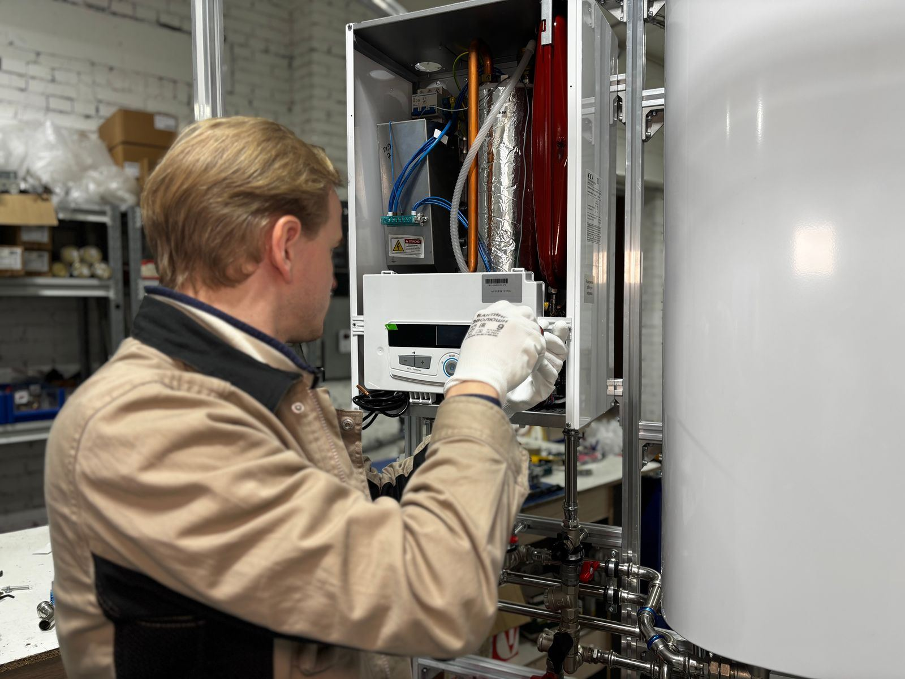

A leaking water heater does not always mean a dying water heater. Plenty of leaks come from parts that are cheap and quick to replace: a relief valve that no longer seats, a plastic drain valve that has started to weep, a supply connector with a tired gasket, or a corroded fitting at the top of the tank. Some puddles are not leaks at all but condensation, especially on a newly filled tank or a gas unit firing on a humid day. The one leak that cannot be repaired is water seeping from the steel tank, usually through the bottom or a seam. For Rochester, MN homeowners, the difference between a small repair and a new heater is why diagnosis comes first.
We treat every leak like a small investigation. The technician dries everything off so fresh water shows where it starts, then checks the relief valve and its discharge line, the drain valve at the base, and every connection on top. On gas models we also inspect the burner compartment, because water there can be normal startup condensation or a sign of a tank that has failed. A relief valve that keeps releasing water triggers a pressure test: static pressure above roughly 80 psi, or a missing expansion tank on a closed system, will keep a new valve weeping. The fix follows the findings.
With the source confirmed, the fix is often simple. A new T&P valve, a brass drain valve in place of a weeping plastic one, fresh dielectric fittings or supply connectors, and an expansion tank or pressure-reducing valve where pressure is to blame can all be handled on the spot. A corroded tank is different. No sealant or patch will hold, so we explain replacement honestly and walk through the choices. Before we leave, we can add a drain pan with a drain line and a leak sensor, which matters most for heaters above finished space. Call (507) 243-0428 for leak repair in Rochester.
What homeowners call us about most is Water Heater Repair in Rochester and Water Heater Replacement in Rochester. That's the place to start for most homes.

Symptoms That Mean It's Time to Call
Catching a symptom early is often the difference between a quick part swap and a tank that gives out on the garage floor. Here are the most common indicators that it's time to call a professional:
- Moisture or mineral crust at the end of the relief valve pipe
- A musty odor or soft floor around the heater location
- A weeping drain spigot on the lower front of the heater
- Corroded pipe connections or damp flex lines above the heater
- Moisture or rust flakes under the burner access cover
- The water meter moving when nothing in the house is running
- A wet floor near the water heater that keeps coming back
- Rusty or discolored hot water paired with dampness at the base
Small Symptoms, Big Consequences
A worn-out anode rod, a sediment-choked tank, or a weak thermocouple rarely fixes itself, and the repair usually costs more the longer it waits. At the first hint of a problem, reach out to Rochester Water Heater at (507) 243-0428 and we'll take a look.
Get Water Heater Leak Repair Handled Today
One call gets a technician scheduled and a clear price before any work starts.
Get Help: (507) 243-0428What Homeowners Ask Us Most
Why Hire a Professional for Water Heater Leak Repair?
Most leak mistakes happen before any tool comes out. Water travels along pipes and the outer jacket before it drips, so the puddle rarely marks the source, and harmless condensation on a gas unit or a cold tank can pass for a leak. Guessing leads to replacing the wrong valve or, worse, missing a tank that is about to fail. The safety side matters as well: a relief valve that is discharging is protecting the tank, and plugging it is dangerous. Brittle old fittings can snap under force, and wet floors near 240-volt wiring is a real shock hazard.
With a trained eye, the answer usually comes quickly. We isolate each possible source in turn, confirm it with fresh water on a dried surface, and measure static pressure so a new valve does not start dripping next week. Worn relief valves, weeping drain valves, and corroded connections are replaced on the spot, and pressure problems get a permanent fix, whether that is an expansion tank or a pressure-reducing valve. A rusted-through tank gets an honest replacement recommendation instead of a temporary fix, and we can add a piped drain pan and a leak sensor to protect your home going forward.
Our Water Heater Leak Repair Process
Every visit follows a step-by-step method built around testing first and replacing parts only when the readings call for it. Here's how we handle water heater leak repair from start to finish:
Isolate the Leak
Before diagnosing, we isolate the heater, cut the gas or power, and contain any standing water so floors and walls stop soaking it up.
Trace the Source
With the surfaces dried, fresh water shows us where the leak begins, whether that is a valve, a fitting, condensation on a cold tank, or the steel itself.
Check Pressure & Expansion
If a relief valve is involved, we measure static pressure and check for an expansion tank, since high pressure will ruin a new valve fast.
Repair, Refill & Verify
We replace the failed part, refill and purge the tank, restart the heater, and confirm every joint stays dry. A leaking tank gets an honest replacement recommendation instead.
How to Prevent Water Heater Problems
A little routine care goes a long way toward keeping a water heater running well past its expected lifespan. Follow these tips from our technicians:
- Check your water pressure; if it runs above about 80 psi, a pressure-reducing valve protects the tank and valves
- Install a drain pan piped to a safe spot, which matters most for attic, closet, and upstairs heaters
- Draining sediment every year helps the bottom of the tank last longer
- Glance at the heater monthly for damp spots, rust, or crust on the fittings
- Have the anode rod checked every few years; once it is used up, the tank starts to corrode
- Ask about expansion control if your home has a check valve or backflow preventer
- Put a water leak sensor on the floor next to the tank so a drip gets noticed early
Should You DIY or Call a Pro?
Some simple checks are fine to do yourself, but most water heater repairs benefit from professional tools, training, and experience. A side-by-side look:
| Consideration | DIY Attempt | Professional Service |
|---|---|---|
| Diagnosis | Fix the part nearest the puddle | Leak traced to its true starting point |
| T&P Valve | Drip silenced, pressure problem left behind | Valve and pressure both addressed |
| Corroded Connections | Forced loose and damaged further | Dielectric unions and connectors rebuilt |
| False Alarms | Condensation mistaken for tank failure | False leaks ruled out with testing |
| Water Damage | No pan, no alarm, no plan | Drain pan, drain line, and leak sensor options |
| Result | Source unconfirmed | Confirmed dry repair or honest replacement advice |
Let's Get Your Hot Water Back
Cold showers and damp floors don't get better on their own. Rochester Water Heater can have a technician headed your way soon.
Tap to Call (507) 243-0428Areas We Serve for Water Heater Leak Repair
We bring water heater leak repair to homes and businesses in town and across the nearby communities. Pick your area to see local details.